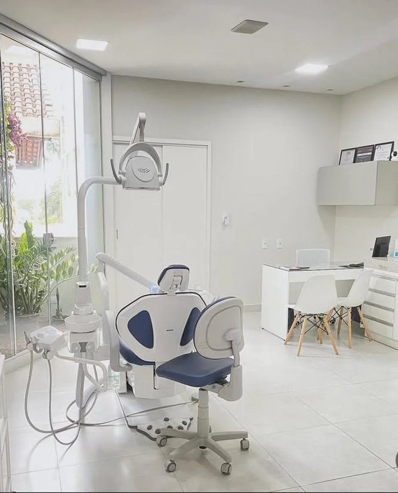
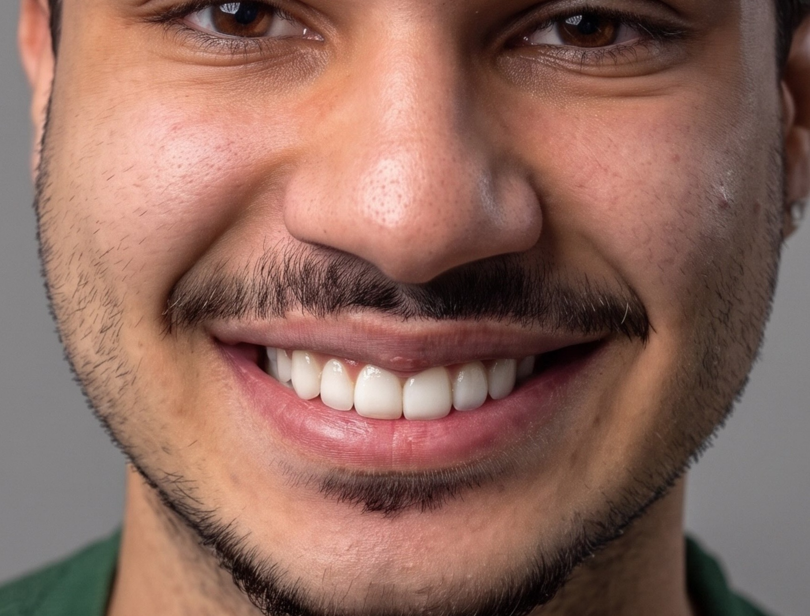
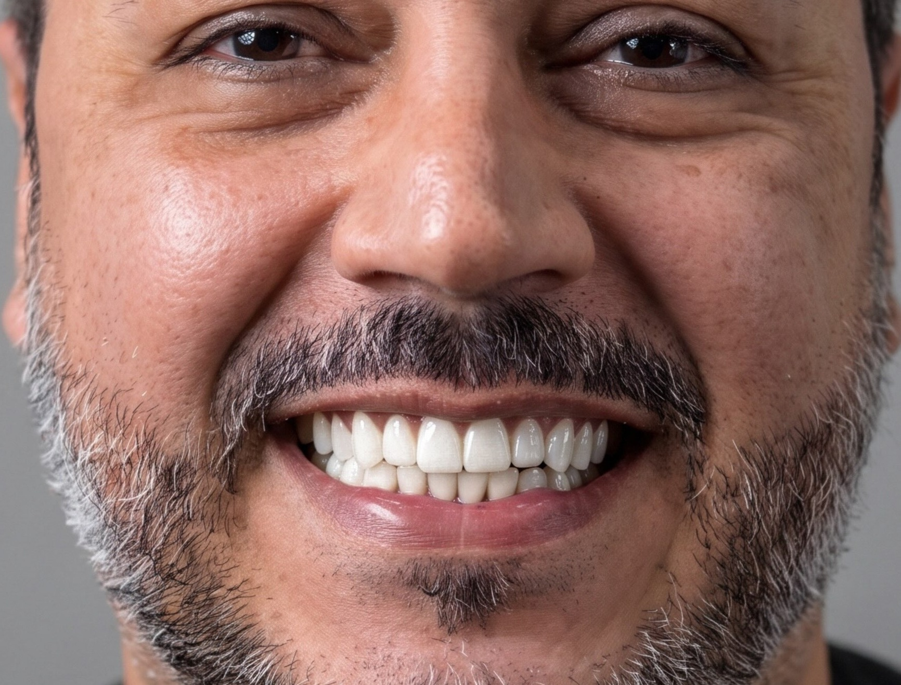
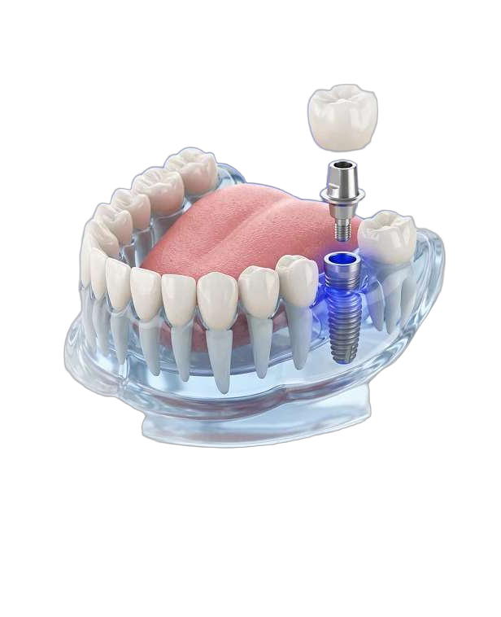
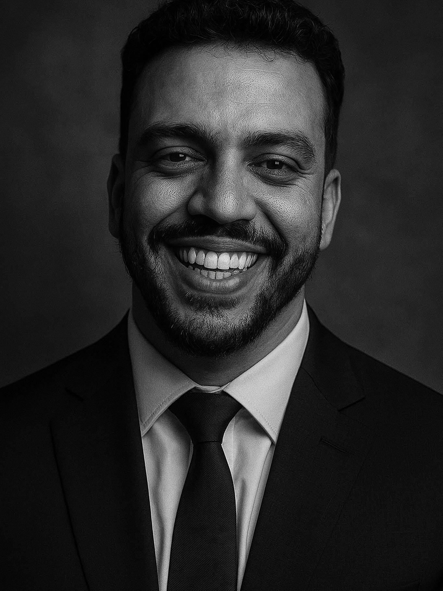
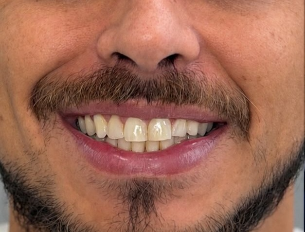
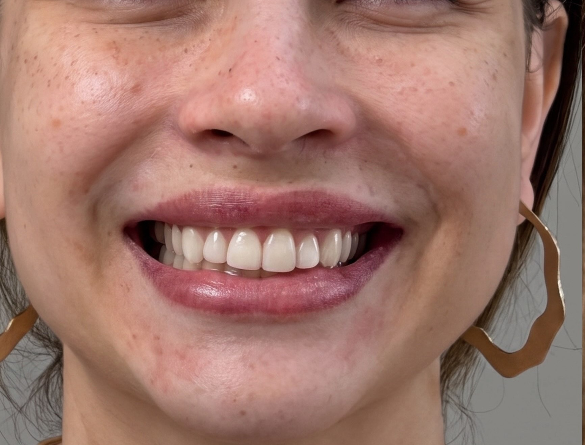
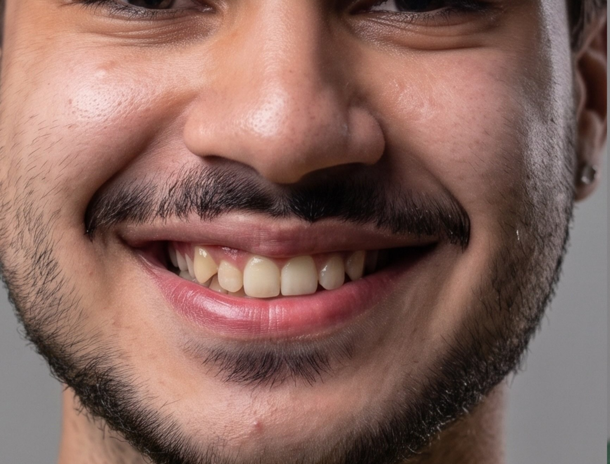
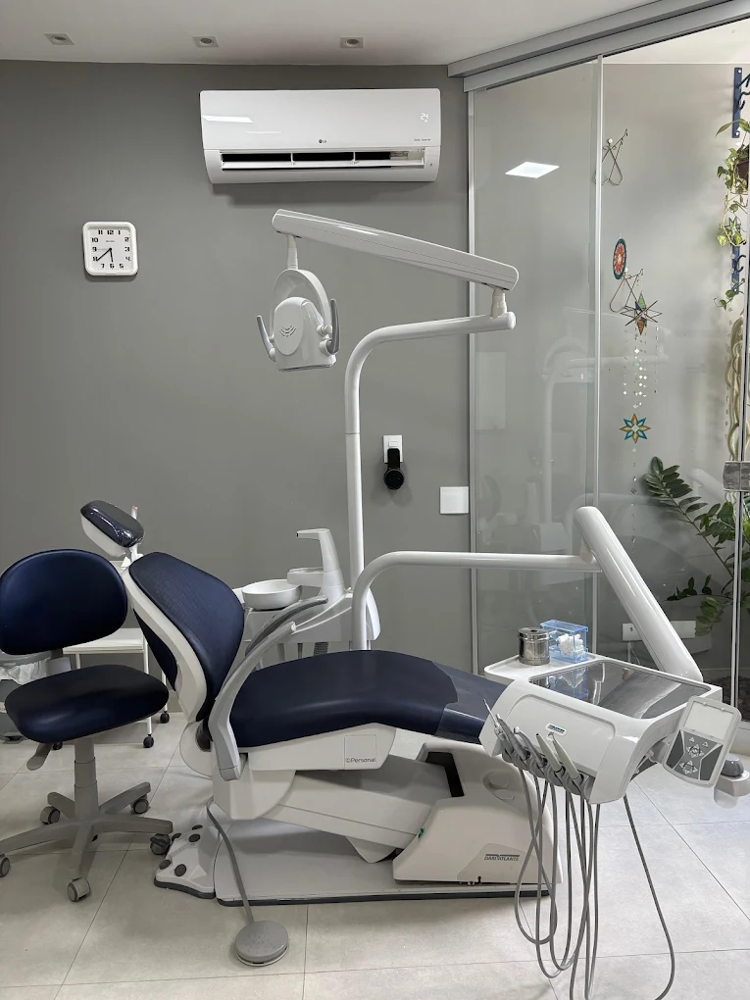
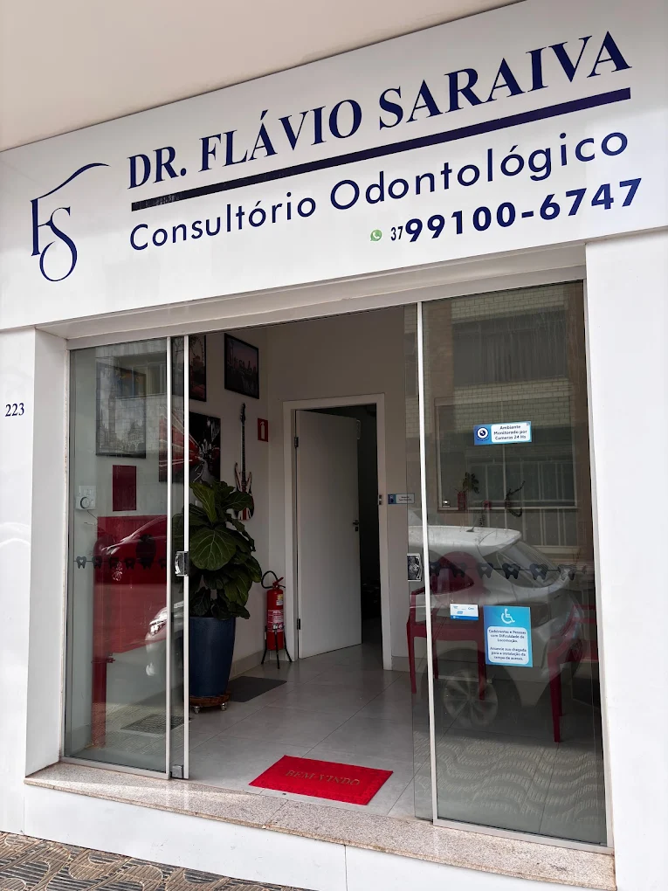

Com quais queixas
os pacientes me procuram



Odontologia de precisão para qualquer
caso clínico
Facetas em Resina
Escultura dental artesanal com resinas de alta performance óptica. Corrige cor, formato e proporção preservando a estrutura natural do dente.
Saiba mais +Clareamento Dental
Protocolos seguros em consultório ou supervisionados para remover pigmentações profundas com máximo conforto e proteção do esmalte.
Saiba mais +
Restauração Estética
Reconstrução de dentes fraturados, cariados ou desgastados utilizando materiais biomiméticos que devolvem resistência e estética invisível.
Saiba mais +Prevenção e Profilaxia
Profilaxia ultrassônica, controle periodontal e acompanhamento regular com rigorosos padrões de esterilização e cuidado individualizado.
Saiba mais +
Quando a estética em resina
é a melhor solução
Solução ideal para pacientes que desejam renovar a harmonia, a cor e o formato dos dentes com naturalidade, segurança e preservação da estrutura dental.
Você quer sorrir com confiança em fotos
O alinhamento estético e o brilho natural devolvem a segurança de sorrir espontaneamente todos os dias.
Insatisfação com a cor ou manchas
Dentes amarelados ou com manchas antigas ganham tonalidade uniforme, harmônica e natural para o seu rosto.
Pequenas fraturas, desgastes ou diastemas
Espaços entre os dentes ou bordas desgastadas pelo tempo são reconstruídos com acabamento anatômico.
Busca por técnica conservadora
As resinas compostas modernas entregam alta durabilidade e estética sem desgastes invasivos desnecessários.
Do diagnóstico ao novo
sorriso, passo a passo
Você conhece cada etapa, os materiais utilizados e o resultado esperado antes de o tratamento começar.
Avaliação
Conversamos sobre a sua queixa, histórico de saúde bucal e o que você espera para o seu novo sorriso.
Análise facial e clínica
Exame detalhado da saúde gengival, oclusão e registro fotográfico para estudar as proporções do rosto.
Planejamento estético
Definição conjunta de formato, cor e etapas clínicas para um resultado harmônico e sem surpresas.
Procedimento clínico
Execução cuidadosa com materiais de excelência, anestesia confortável e rigoroso controle de biossegurança.
Polimento e acompanhamento
Acabamento de alto brilho que imita o esmalte natural e consultas preventivas para preservar o resultado.

Odontologia planejada em cada
detalhe
Cada atendimento começa com escuta atenta, diagnóstico preciso e planejamento individualizado. Trabalhamos com os melhores materiais e produtos para garantir um tratamento de excelência, sempre priorizando a biossegurança, a transparência e o conforto de cada paciente.
Formação Acadêmica
Graduado em Odontologia pela Universidade Una de Bom Despacho, com certificação especializada em Resinas Compostas.
Atuação e Especialidades
Cirurgião-Dentista com atuação destacada em Estética Dental, Facetas em Resina Composta, Clareamento e Clínica Geral em Bom Despacho - MG e Pitangui - MG.
Registro Profissional
CRO-MG 75116 · Flavio Saraiva Odontologia LTDA (CNPJ 61.149.160/0001-91)
Resultados de pacientes
acompanhados na clínica

Facetas em resina composta
Harmonização completa de cor, textura e volume dental com acabamento natural e alinhamento do sorriso.
Reabilitação estética superior
Recuperação da luminosidade, correção de desgastes incisais e rejuvenescimento da expressão facial.

Estética natural e delicada
Refinamento de contorno, clareamento e simetria preservando a delicadeza e a identidade do sorriso.

Alinhamento e brilho em resina
Transformação da curva do sorriso e uniformização de cor com resinas compostas de alto polimento.
O que dizem os pacientes
"Eu tinha receio de o resultado ficar artificial, mas o Dr. Flávio explicou cada detalhe antes de começar. O trabalho em resina ficou super natural e devolveu minha vontade de sorrir nas fotos."
"Consultório impecável, muito bem localizado no centro e com um cuidado enorme na higiene e biossegurança. Atendimento pontual, mão super leve e sem dor."
"Desde a primeira avaliação senti muita segurança. Os materiais são de altíssima qualidade e o acabamento final superou todas as minhas expectativas."
Perguntas mais
frequentes
Ficou com alguma outra dúvida? Chame diretamente nossa equipe pelo WhatsApp para conversar com o Dr. Flávio.
Não. A técnica de facetas em resina composta é minimamente invasiva e, na grande maioria dos casos, é realizada de forma aditiva (sem desgaste da estrutura saudável do dente), proporcionando um procedimento confortável e seguro.
Após a consulta de avaliação e planejamento (e clareamento prévio, quando indicado), a escultura das facetas em resina composta costuma ser concluída em poucas sessões clínicas, com resultado imediato e previsível.
Sim! O Dr. Flávio possui certificação em resinas compostas e trabalha com estratificação de camadas e polimento de alto brilho, reproduzindo a translucidez, a textura e o tom natural dos dentes para um sorriso elegante e sem aspecto artificial.
O consultório principal está localizado no coração de Bom Despacho - MG, na Avenida Vigário Nicolau, 223 - Centro (CEP 35630-072), em espaço de fácil acesso. O Dr. Flávio também realiza atendimentos em Pitangui - MG.
Estrutura preparada para
cada etapa do tratamento
Nosso consultório está localizado no coração de Bom Despacho, em um espaço de fácil acesso e conveniência, priorizando sempre a biossegurança e o conforto.

